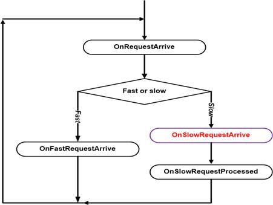
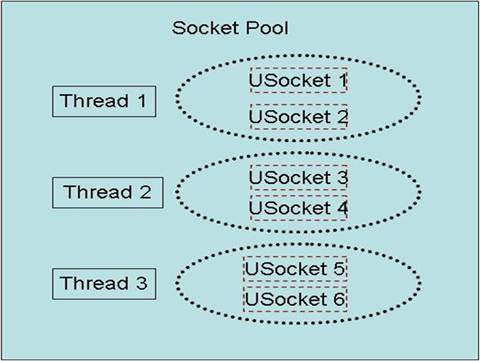
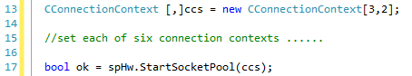
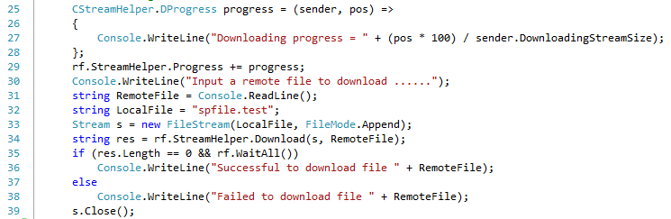
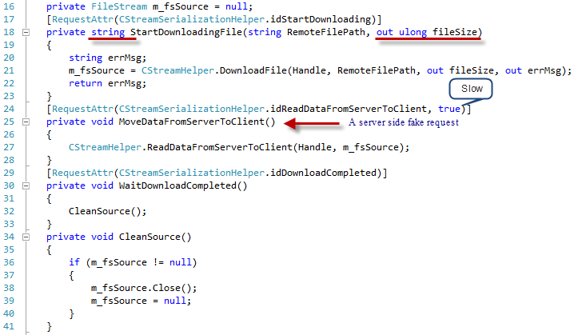
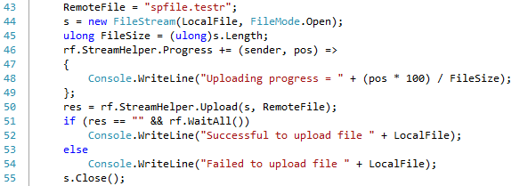
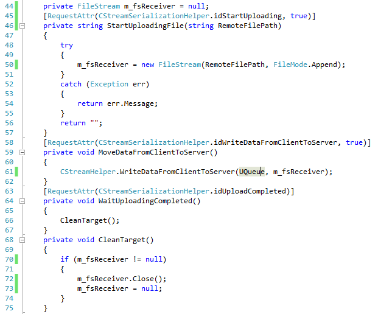

Tutoral 3 – Exchange Any Size Files between Client and Server
Contents:
Introduction
SocketPro client and server threading models
· Server threading model
· Client threading model
Download a file from server to client
· Initialize a downloading request at client side
· Open a stream for reading data and fake a slow request on behalf of a client at server side
Upload a file from client to server
· Initialize an uploading request at server side
· Open a writable stream for receiving client data at server side
1. Introduction
It is a common task to write code in order to exchange files between client and server efficiently. SocketPro at its adapter level provides helper utilities for this purpose.
In addition, we are going to discuss SocketPro client and server threading models so that you can easily remember calling threads for various events and virtual functions.
The tutorial sample projects are located at the directory ..\tutorials\(csharp|vbnet|cplusplus|java\src|ce|python)\remote_file
2. SocketPro client and server threading models
SocketPro is created so that your developments are easy especially when dealing with threading. SocketPro tries its best to manage creating threads and their life so they occur automatically.
Server threading model: As described at the tutorial one Hello world for a simple client/server application, SocketPro server has one main thread that creates and manages all worker thread on the fly at a proper time. In addition, the main thread dispatches all of client requests to obey the flow chart of the below Figure 1.

Figure 1: Dispatch chart of requests processing at server side
As shown in Figure 1 above, SocketPro server main thread only dispatches a slow request onto a worker thread for processing. How does the SocketPro server know if a request is a slow one? The answer is simple: when you call AddSlowRequest in C++ or set the SlowRequest attribute to true (for example, [RequestAttr(hwConst.idSleepHelloWorld, true)]) right before a function, you tell the SocketPro server that the request is going to take a long time to process.
Another key point is that all virtual functions starting with OnXXX within whole name space SocketProAdapter.ServerSide, except the virtual function OnSlowRequestArrive, are processed within the main thread. Only one, OnSlowRequestArrive, is processed within a worker thread.
All of the requests from one socket connection are always processed one-by-one sequentially at server side no matter how many or what requests. From the view of a SocketPro server, all of the fast requests from all clients are processed within one main thread.
Client threading model: Client threading model can be described with the below Figure 2.

Figure 2: Socket pool and its threading model
SocketPro client uses socket pool concept to manage threads and sockets driven by its hosting threads. Note that all sockets are using non-blocking styles for communicating data between client and server as depicted above. To create a pool of sockets as shown in Figure 2, you can do so using the follow code in C# shown below.

Figure 3: Start a pool of sockets with three threads and two sockets per thread
Note that each of the socket connection contexts can point to either the same server or different servers. When you destroy a socket pool, you kill both their threads and sockets.
One key point is that all of the socket events, SSL/TLS events, various events within the whole name space SocketProAdapter.ClientSide and returning data from server all originate from socket pool threads except the SocketPool events for speCreatingThread, speThreadCreated, speKillingThread, speThreadKilled, speUSocketCreated, speUSocketKilled, speLocked and speUnlocked. Theses eight events originate from your calling thread instead.
3. Download a file from server to client
We know that it is a common task to exchange files between client and server. Therefore, SocketPro adapters come with helper classes for this purpose.
Initialize a downloading request at client side: At client side, you can use the code snippet illustrated below in Figure 4 to send a request to a remote SocketPro server with a given server file path.

Figure 4: Download a file from server to client with a given server file path
The given server file path is RemoteFile as shown in line 34 in Figure 4 below. Because it is an asynchronous processing, we need to call the method WaitAll until a whole file is downloaded before closing client receiving stream. You can monitor downloading progress as shown in lines 25 through 29.
Also note that the downloading stream size at line 27 comes from the size of source stream or file at server side.
Open a stream for reading data and fake a slow request on behalf of a client at server side: Let’s see what server code is as depicted in Figure 5.

Figure 5: Download file from server to client
Whenever a client sends a file download request, the server should always respond with a file size and an error message string as shown in lines 17 through 23. In line 21, SocketPro opens a file for reading from a given file path RemoteFilePath that originated from the client. Therefore, the client will know the downloading file size ahead of time as shown in line 27 and by the error message in line 34 in Figure 4 above. In addition, the call at line 21 fakes a request MoveDataFromServerToClient at server side on behalf of the client.
Since sending a file to a client may take a long time as shown in line 27, then we must use a worker thread to do such as shown in line 24. At last, a client will inform its server that downloading is complete as shown in lines 29 through 33.
4. Upload a file from server to client
Initialize an uploading request at server side: It is time to show you how to upload a file from client to server. The client code is given in Figure 6 below.

Figure 6: Upload a file from client to server with a given file path
The method Upload in line 50 returns an empty string to indicate success. If it fails, however, the method will return an error message to inform you. The method initializes a file by uploading synchronously, though moving data to server is made asynchronously. Therefore, we call the method WaitAll until all data is sent to the remote server before the closing stream.
Open a writable stream for receiving client data at server side: Now, let’s see the server side code as shown in the Figure 7. Once the server gets a file upload request from a client, the code that runs from lines 46 through 57 will be called. The function StartUploadingFile will return an empty string if successful. Otherwise, it returns a caught exception error message.

Figure 7: Server side code for processing client file uploading request
Client side will send actual data in chunks with streaming style. We write data into a previously opened file as shown in the code from lines 59 through 62 for each of the chunks of data. Finally, the server will be informed as showed in lines 64 through 67 if there is no data to be uploaded.